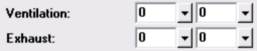

Ventilation and Exhaust (System Data Window) |
  
|
Ventilation and Exhaust (System Data Window) |
|

Ventilation, Winter and Summer: Specifies the amount of outside ("fresh") air that is mechanically introduced into the conditioned space by the HVAC equipment. This value can be entered either as CFM or as air changes per hour.
The addition of outside air to the HVAC equipment imposes a load that must be accounted for. The additional heating and sensible cooling loads are determined using the design temperature differences, while the latent cooling load is determined using the wet bulb temperature. Typically, less ventilation air is needed in the winter than in the summer.
If a sensible heat recovery device is going to be used to process the outdoor air before it is introduced into the system, then enter the appropriate values in the Heat Recovery inputs.
To determine the amount of ventilation air recommended by Manual J, click the dropdown help button beside either ventilation input to open the Ventilation Rate dialog. The Ventilation Rate dialog calculates the amount of ventilation that may be necessary in order to provide enough outdoor air if the amount of infiltration in this system is insufficient (the cooling infiltration is used to determine the requirement).
Exhaust, Winter and Summer: Specifies the total amount of air being exhausted to the outside from rooms in the current system. Note that the amounts you enter for ventilation and exhaust will affect the amount of infiltration you entered for this system. If ventilation is greater than exhaust, the system will be under positive pressure and the infiltration will be reduced. If exhaust is greater than infiltration, the system will have negative pressure and the amount of infiltration will be increased above the amount that you specified.